Một app cho đồng hồ zin của nhiều hãng xe máy. NConnect đưa Apple CarPlay (không cần hộp ngoài), Android Auto, Waze / Google Maps 3D, cảnh báo camera phạt nguội, thông báo, nhạc, thông số xe và Game Mode lên màn TFT zin. Chọn dòng xe, làm vài bước một lần, từ lần sau bật xe là tự lên.
Chọn dòng xe trong app, làm theo vài bước một lần. Từ lần sau bật xe là bản đồ tự lên, điện thoại cứ để trong túi hoặc cốp.
Gõ tên xe để xem NConnect đã chạy trên xe đó chưa.
Chưa thấy xe này trong danh sách. Gửi ảnh đồng hồ và tên xe trên Discord
Đang thử nghiệm: kết nối đã làm xong, đang cần thêm người thử trên xe thật. Có lỗi thì gửi báo cáo ngay trong app.
Cách kết nối từng xe ở ngay dưới.
Qua Bluetooth, đúng kết nối Yamaha làm cho bản đồ Garmin. Không cần Y-Connect.
Qua Wi-Fi của xe hoặc cáp USB, hình mượt tới 30 khung mỗi giây.
Qua Wi-Fi của chính đồng hồ; mở, khoá xe qua Bluetooth.
Qua Wi-Fi của màn chiếu điện thoại MotoPlay trên đồng hồ, như Zontes.
Từ bản 0.12.0 trên Android. Bluetooth ghép đồng hồ, bản đồ chiếu qua Wi-Fi Direct / AP của xe.
Android và iPhone. Bản đồ chiếu qua Wi-Fi của đồng hồ (Carbit / MotoFun).
Trên Android. Bản đồ chiếu qua Wi-Fi của đồng hồ.
Android và iPhone. Trên iPhone: hỗ trợ Yamaha (XMAX, NMAX, MT-07, MT-09, R9, TMAX, Tracer 9, Niken GT), Zontes, CFMOTO, Morbidelli T352X, WMoto và Moto Morini X-Cape (qua QR Wi-Fi). BMW 10.25", Suzuki, Ducati, Kawasaki, KOVE và VOGE hiện có trên Android.
Bản đồ, dẫn đường cho xe máy, thông báo, nhạc, thông số xe, đi nhóm… chạy như nhau trên mọi dòng xe được hỗ trợ, cả Android và iPhone.
Đưa trọn giao diện Apple CarPlay từ iPhone lên đồng hồ zin xe máy — không cần Android Box hay USB Dongle ngoài.
Đưa Android Auto chính thức lên màn TFT zin của xe máy: Google Maps, Waze, YouTube Music, Spotify… điều khiển trọn vẹn bằng cùm công tắc tay lái.
Bản đồ 3D nguyên bản lấy thẳng từ Waze / Google Maps (Android 12L+, tắt màn hình điện thoại vẫn chạy mượt) cùng Bản đồ Google, VietMap & OpenFreeMap siêu mượt trên iPhone.
Báo biển giới hạn tốc độ đúng chiều xe chạy, camera CSGT, camera AI và camera bắn tốc độ trước 350 m; tự ghi Lịch sử Quá tốc độ từng chuyến và Tra cứu phạt nguội CSGT ngay trong app.
Trong khu dân cư: 60 km/h (đường đôi, một chiều ≥ 2 làn) hoặc 50. Ngoài khu dân cư: 70 hoặc 60 (Thông tư 38/2024/TT-BGTVT). Chỉ là ước tính, luôn đi theo biển thực tế.
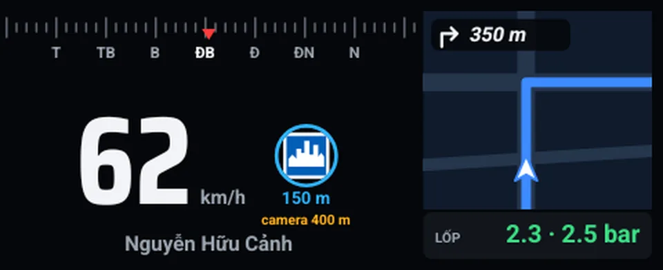
Đường đua, Tối giản, Kim + bản đồ Radar, BMW Sport Cockpit M Motorsport và bố cục cánh cong kính mờ cho màn tròn 4 inch.
Chơi 3 tựa game arcade siêu nhẹ Moto Rush, Turbo Hop và Neon Pong ngay trên đồng hồ xe bằng phím cùm tay lái khi chờ đèn đỏ hoặc nghỉ chân.
Ba cách tìm đường: miễn phí sẵn có, VietMap hoặc Google (tính kẹt xe, tránh phà). Tự tạo Cung đường Vui (Fun Route) vòng lặp phượt và nhập trực tiếp file lộ trình .GPX.
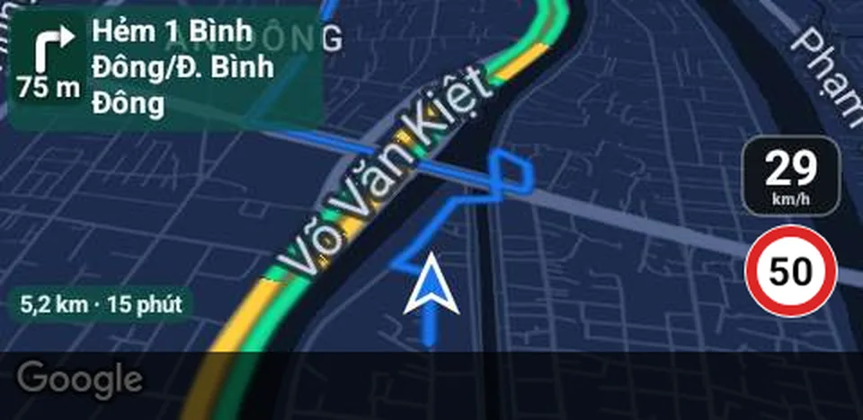
Vẽ tuyến tour một lần, lưu lại, lần sau bấm Đi là chạy trên cả Android và iPhone.
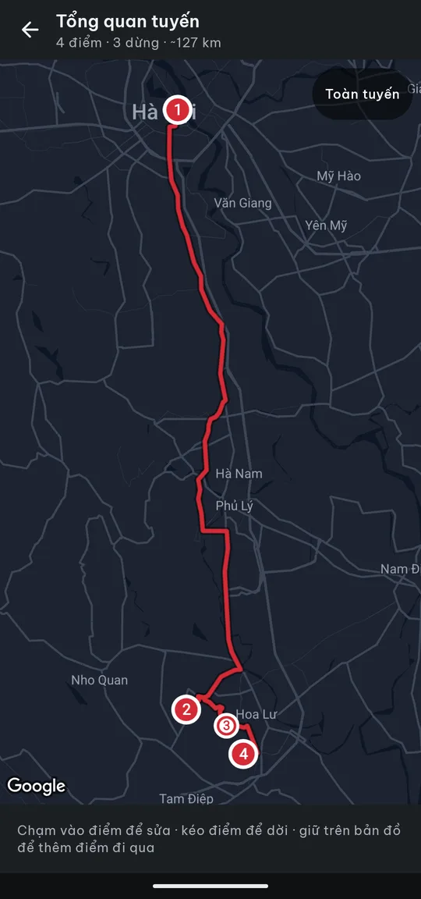
Kết nối trọn bộ phụ kiện Bluetooth cho mọi dòng xe, hiển thị trực tiếp ngay trên đồng hồ.
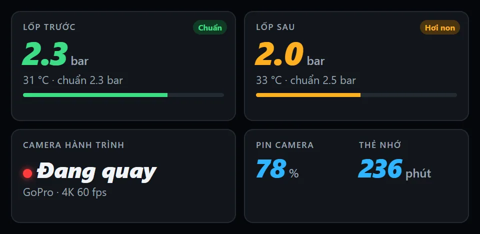
Zalo, Messenger… hiện ngay trên bản đồ và trong Trung tâm thông tin. Cuộc gọi thường và cuộc gọi Zalo, Messenger: nghe hoặc từ chối bằng nút trên tay lái. Tự chọn app nào được gửi thông báo.
Trung tâm thông tin, Âm nhạc (ảnh bìa, bài tiếp, bài trước, âm lượng), trình chiếu ảnh / GIF của bạn. Tự chọn thông số trên các ô: ắc quy, nước mát, vòng tua, độ mở ga, xăng tức thời, xăng trung bình, ODO, km còn đi được.
Bật Tìm quanh đây trong thẻ Tour để thấy các xe dùng NConnect quanh bạn, theo dòng xe, ngay trên bản đồ của đồng hồ. Tắt được từ menu trên xe. Chỉ ở Việt Nam.
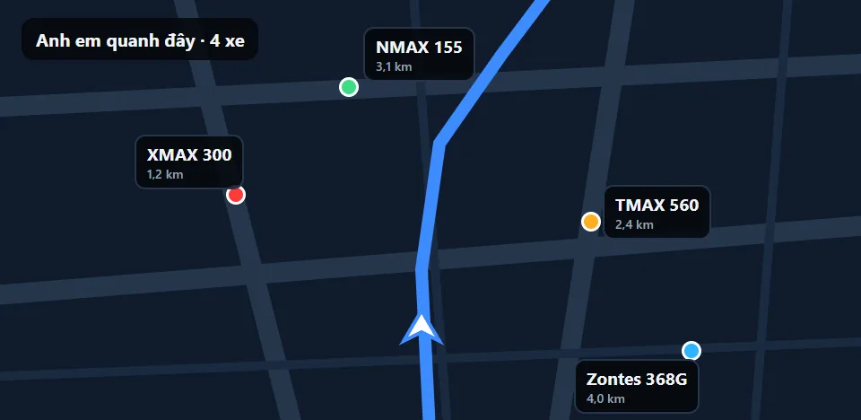
Đổ đầy bình rồi bấm "Vừa đổ đầy" (trên điện thoại, hoặc ngay trên xe ở menu Yêu thích). NConnect cộng lượng xăng xe báo đã dùng, tính số km còn đi được theo mức tiêu hao của chính bạn.
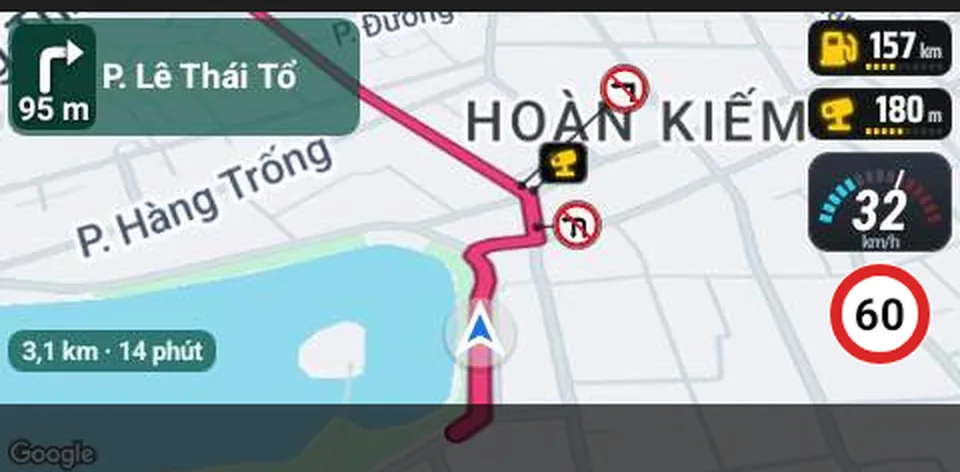
Một người tạo nhóm, gửi mã 6 số cho anh em. Vị trí từng người hiện thành chấm màu kèm chữ cái đầu và tên ngay trên bản đồ của đồng hồ, có điểm hẹn chung. Không cần nhìn điện thoại vẫn biết anh em đang ở đâu.
Tạo chuyến đi với điểm xuất phát, điểm đến, giờ đi, liên hệ. Anh em trong 50 km thấy và join, Android và iPhone dùng chung.
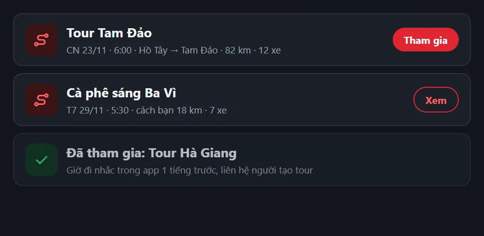
Hồ sơ xe có ảnh và hiệu chỉnh ODO riêng từng xe. ODO, ắc quy, nhiệt độ máy đọc thẳng từ xe mỗi 10 giây.
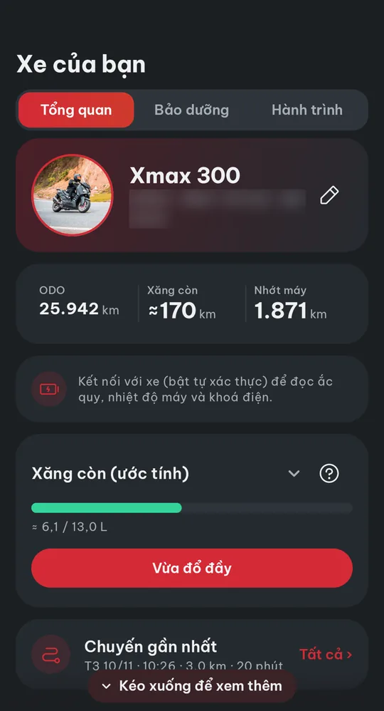
Tổng kết hôm nay, 7 ngày, tháng này. Từng chuyến vẽ trên bản đồ kèm tốc độ cao nhất, trung bình, nhiên liệu (L/100km) và điểm vượt tốc độ. Dừng đổ xăng hay mất kết nối giữa đường vẫn ghép thành một chuyến.
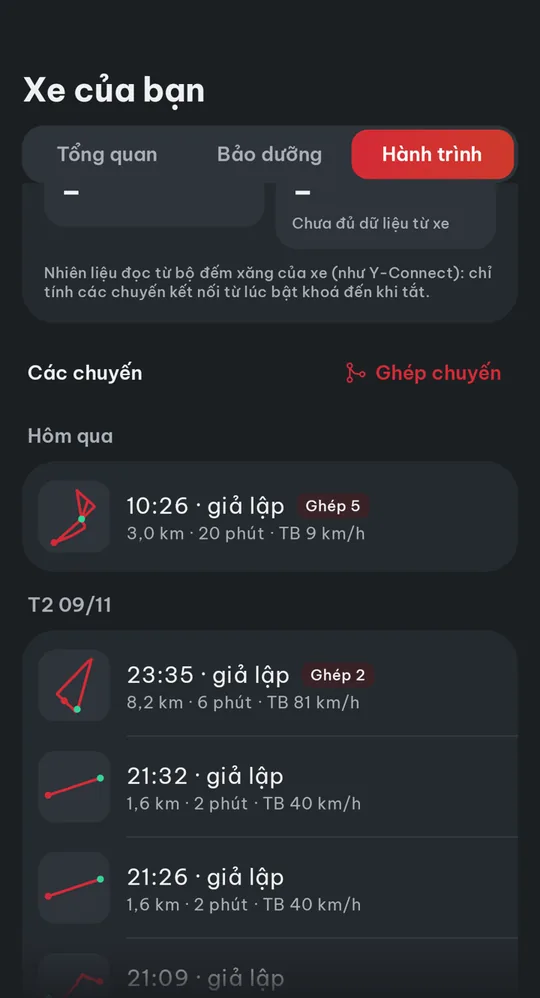
Thời gian tăng tốc 0–60 và 0–100 km/h của từng chuyến. Tạo ảnh hoặc video chia sẻ kiểu app chạy bộ: nền bản đồ có tuyến đường, hoặc ảnh của bạn kèm bản đồ nhỏ, tự chọn thông số, khung bài đăng hoặc story. Biển số và ODO không bao giờ hiện trên ảnh.
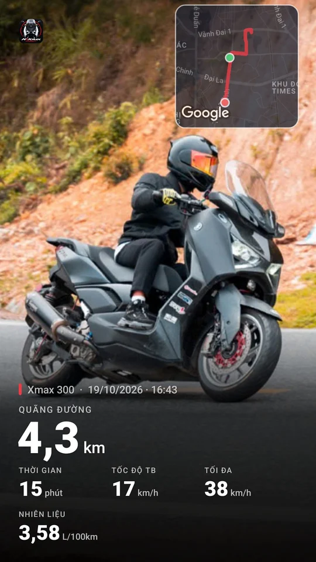
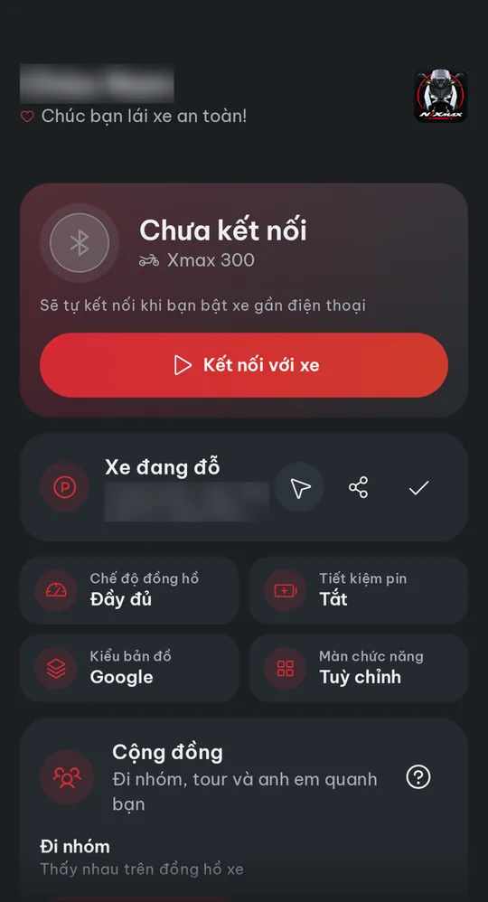
Đọc qua tai nghe hoặc loa điện thoại, bật tắt từng nhóm trong Cài đặt.
Tắt máy là app nhớ chỗ đỗ. Trang chủ hiện địa chỉ, đỗ bao lâu, đường đi bộ quay lại và nút gửi vị trí cho người khác.
Tự sao lưu mỗi ngày lên Google Drive hoặc xuất file chia sẻ qua Zalo / Telegram; khôi phục chéo giữa Android và iPhone (chuyến đi, hồ sơ xe, ODO, bảo dưỡng, bình xăng).
Tìm đường trong Google Maps rồi chia sẻ sang NConnect, hoặc tìm ngay trong app. Chọn tuyến trên bản đồ thật, phóng to xem từng đoạn trước khi đi.
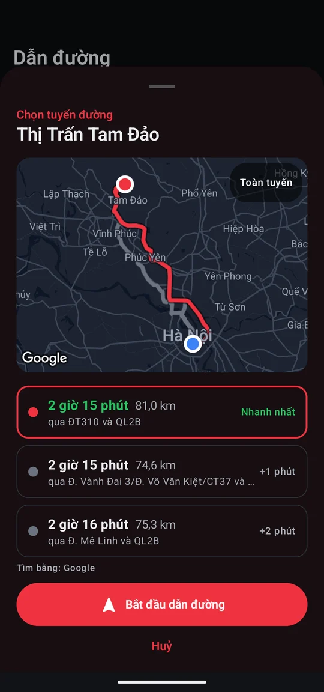
Chọn tuyến
3 tuyến, phóng to kiểm tra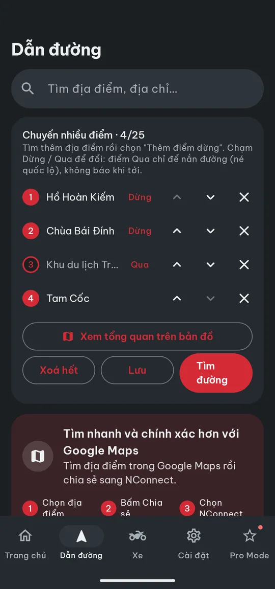
Chuyến nhiều điểm
Tới 25 điểm, Dừng hoặc QuaTổng quan tuyến
Kéo điểm để dời, giữ để thêm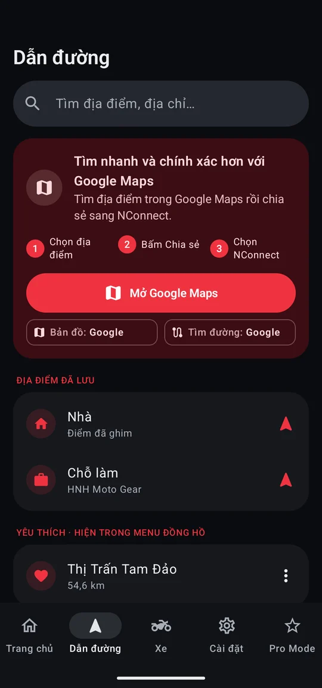
Dẫn đường
Chia sẻ từ Google Maps, địa điểm đã lưu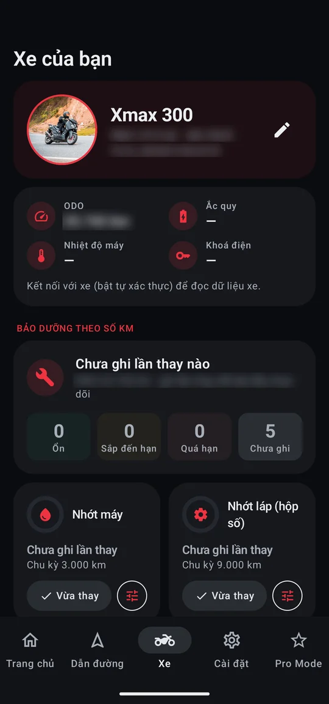
Xe của bạn
Hồ sơ, thông số, bảo dưỡng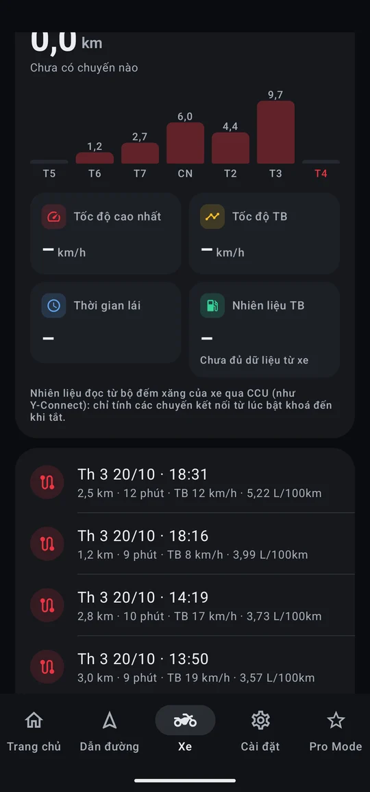
Hành trình
Tổng kết, nhiên liệu, từng chuyến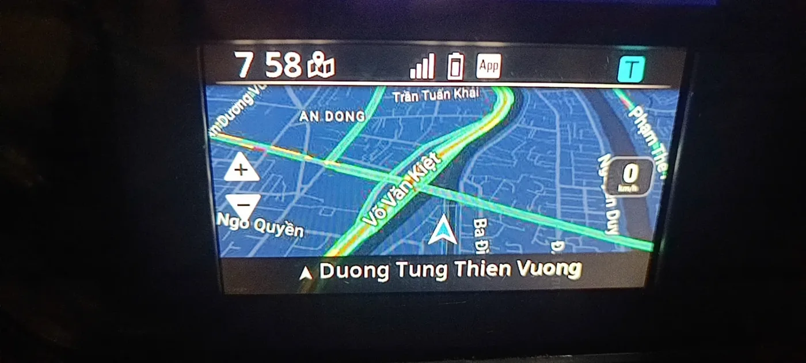
Không lắp thêm phần cứng, không can thiệp vào xe. NConnect dùng đúng kết nối Bluetooth mà Yamaha thiết kế cho bản đồ Garmin, nên đồng hồ hiển thị như đồ chính hãng: nút zoom, ô tốc độ, thanh tên đường. Với TMAX, Tracer 9, NConnect dùng Wi-Fi và cổng USB có sẵn của xe như ứng dụng MyRide-Link. Với Zontes, NConnect dùng Wi-Fi của chính đồng hồ như ứng dụng của hãng.
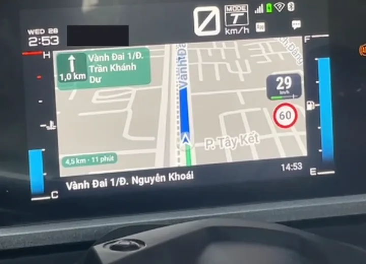
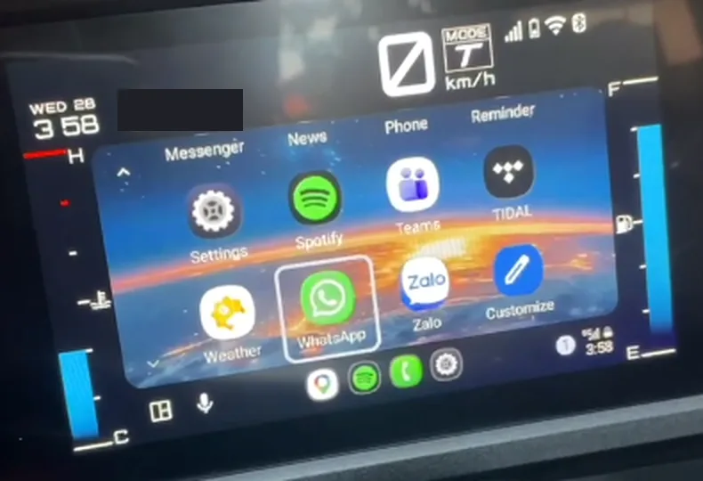
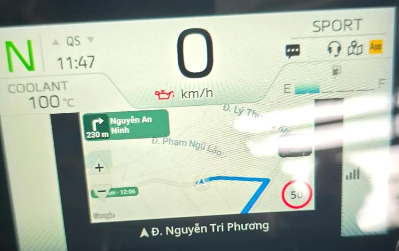
CH Play → ảnh đại diện → Play Protect → ⚙ → tắt "Quét ứng dụng bằng Play Protect". Rồi tải APK, mở file để cài, cho phép "cài ứng dụng không rõ nguồn" nếu máy hỏi.
Làm theo hướng dẫn lần đầu: Thiết bị ở gần, Vị trí "Luôn cho phép", Thông báo. Tắt tối ưu pin cho NConnect.
Trong app vào Dòng xe: Yamaha Bluetooth (XMAX, NMAX, MT-09, R9), TMAX / Tracer 9, Zontes hoặc CFMOTO. Với Yamaha Bluetooth, gỡ Y-Connect, DashConnect để chúng không giành kết nối với xe.
Làm theo các bước của dòng xe ở mục Kết nối phía trên, một lần. Từ lần sau chỉ cần bật xe là NConnect tự kết nối.
Dùng Sideloadly trên máy tính. Cứ 7 ngày phải cài lại 1 lần, và lần nào cũng cần máy tính.
Xem video cài qua máy tính ›Dùng chứng chỉ trả phí, cài ngay trên iPhone, không cần máy tính.
Xem video cài trực tiếp trên điện thoại ›NConnect cho iPhone chưa có trên App Store, cần tự cài file IPA.
Chọn Cách 1 hoặc Cách 2 ở trên rồi làm theo video.
Bluetooth, Vị trí "Luôn luôn", Mạng cục bộ (Local Network). Bật Siri nếu dùng Apple CarPlay và bật "Chia sẻ thông báo hệ thống" cho xe trong Cài đặt Bluetooth.
Bật xe kết nối lần đầu. Muốn dùng Apple CarPlay: bấm ô CarPlay ở Trang chủ → Kích hoạt MFi trực tuyến → nhập Wi-Fi 5 GHz đang nối (lấy 1 chạm từ mã QR với xe Wi-Fi 5 GHz, hoặc nối nguồn phát Wi-Fi 5 GHz mang theo xe với xe Bluetooth / 2.4 GHz) → bấm Kích hoạt CarPlay!
Cách 1 nên tải IPA trên máy tính. Trên iPhone, file IPA được lưu vào app Tệp (Files).
Yamaha: các dòng có màn TFT hỗ trợ Garmin StreetCross (Bluetooth) hoặc MyRide-Link (Wi-Fi / USB). Zontes: các đời đồng hồ có chiếu màn hình như 368G / K / E, 350M / D / E, 703F, 125X / V. CFMOTO: xe có màn chiếu điện thoại MotoPlay (450SR-S, 450MT có T-Box; 700MT, 450MT đời mới).
Lấy trực tiếp từ trang phát hành của NConnect.
Đang tải danh sách phiên bản…
Từ bản 0.12.5, NConnect kích hoạt Apple CarPlay trực tiếp trên iPhone không cần Android Box ngoài. Lần đầu trên máy mới: (1) Bật Siri (Cài đặt iPhone → Siri), không chặn CarPlay trong Thời gian sử dụng và cho phép Mạng cục bộ (Local Network) + 4G/5G; (2) Mở NConnect → bấm thẳng ô CarPlay ở Trang chủ → bấm Kích hoạt MFi trực tuyến; (3) Với xe có Wi-Fi đồng hồ 5 GHz (TMAX, Tracer, Niken, CFMOTO, Zontes, Morbidelli, Benelli, QJMotor, BMW…): chờ iPhone nối xong Wi-Fi đồng hồ, bấm Lấy từ mã QR của xe (hoặc nhập 1 lần) rồi bấm Kích hoạt CarPlay. Với xe không có Wi-Fi (XMAX / NMAX / MT-07 / MT-09 / R9…) hoặc đời xe hiếm chỉ có Wi-Fi 2.4 GHz: tính năng hiện ở chế độ kiểm thử và sẽ không dùng được khi ra đường nếu không có Wi-Fi 5 GHz trên xe (vì iOS bắt buộc duy trì Wi-Fi 5 GHz liên tục). NConnect đang phát triển một bộ mạch nhỏ gọn cắm trên xe để duy trì Wi-Fi 5 GHz tự động (vẫn giữ 4G/5G); hiện tại bạn có thể dùng thử ngay bằng router Wi-Fi 5 GHz di động hoặc điện thoại phụ phát Wi-Fi 5 GHz mang theo xe (với router không SIM, đặt IP tĩnh và bỏ trống mục Bộ định tuyến/Router để iPhone vẫn dùng 4G/5G); (4) Bấm Cho phép khi iOS hỏi cho phép CarPlay khi khoá máy. Sau đó vào Cài đặt iPhone → Cài đặt chung → CarPlay → NConnect để sắp xếp lại Google Maps, VietMap Live, Waze, Spotify…
App miễn phí. Tìm đường mặc định miễn phí. Tìm đường VietMap và Google cần mã kích hoạt, liên hệ người phát triển trong nhóm Zalo.
Không. NConnect đã có sẵn thông báo, cuộc gọi, nhạc, thời tiết, thông số xe như Y-Connect. Nên gỡ hoặc thu hồi quyền Bluetooth của Y-Connect và DashConnect để chúng không giành kết nối với xe.
GPS mới là thứ tốn pin, bản đồ thì gần như không. Bật Tiết kiệm pin (ngay trên đồng hồ: giữ ✓ 1,5 giây → Yêu thích) để tắt GPS mà vẫn giữ các màn hình. Dẫn đường sẽ tự bật lại GPS khi cần.
Có. NConnect chạy nền, tự kết nối khi bật xe. Cần cấp quyền Vị trí "Luôn cho phép" và tắt tối ưu pin, nhất là trên máy OPPO, Xiaomi, vivo, Samsung.
Đi qua biển giới hạn tốc độ có trong dữ liệu thì đồng hồ báo theo biển đó; camera là dữ liệu tham khảo, tải theo khu vực bạn đi. Đường đã có biển trên bản đồ thì dùng biển đó. Đường chưa có biển thì đây là ước tính theo Thông tư 38/2024/TT-BGTVT dựa trên loại đường, khu dân cư và dải phân cách. Đôi khi không khớp biển thật, luôn đi theo biển báo thực tế.
Có. Các xe này dùng cùng kiểu đồng hồ với XMAX, NMAX (Garmin StreetCross qua Bluetooth): từ bản 0.9.7 trong app vào mục Dòng xe, chọn Yamaha có ghi MT-09 (2024 trở lên), R9 rồi kết nối như bình thường. Mục riêng này để chuẩn bị gán phím trái / phải của xe. MT-09 đời 2024 trở lên đã chạy thật: bản đồ, chỉ dẫn rẽ, biển giới hạn tốc độ hiện trên đồng hồ. R9 chưa có người thử, anh em đi xe này thử và gửi báo lỗi giúp.
Có, chính thức từ bản 0.9.7, trên Android và iPhone. Trong app vào mục Dòng xe, chọn Zontes, rồi quét mã QR bản đồ hiện ngay trên màn hình chính của đồng hồ. Muốn mở, khoá xe bằng điện thoại thì giữ phím SET ở cùm tay lái bên trái để vào Setting, chọn Information rồi quét mã QR trong mục này. Wi-Fi của đồng hồ khởi động khoảng 40 giây đến 1 phút sau khi bật xe, chờ một chút là bản đồ tự lên. Trên iPhone, nếu máy không tự vào Wi-Fi của đồng hồ thì vào tay một lần trong Cài đặt › Wi-Fi (app có nút sao chép mật khẩu).
Đang thử nghiệm, trên Android và iPhone. Xe cần có màn chiếu điện thoại MotoPlay: 450SR-S, 450MT bản có T-Box, và từ bản 0.11.0 cả 700MT, 450MT đời mới. Ghép Bluetooth điện thoại với xe một lần, trong app chọn Dòng xe: CFMOTO, mở MotoPlay trên đồng hồ rồi quét mã QR hiện trên đó. Chưa nối được thì gửi báo cáo lỗi ngay trong app để được sửa.
Đang thử nghiệm từ bản 0.11.1, chỉ trên Android, cho các xe BMW Motorrad màn TFT 10.25 inch: C 400 GT, CE 04, R 1250 RT, K 1600, R 18. App nối Bluetooth với đồng hồ để đọc thông số thật của xe (lốp, xăng, quãng đường còn đi, số, độ nghiêng…) và chiếu bản đồ lên màn xe qua Wi-Fi Direct; mọi thao tác trên xe bằng núm Wonder Wheel. Chưa thử trên xe thật: anh em có xe BMW thử giúp và gửi báo cáo lỗi ngay trong app.
Tiếng Việt, Anh, Ý, Pháp, Đức, Tây Ban Nha, Indonesia, Bồ Đào Nha (Brazil) và Hungary, đổi trong Cài đặt. Chữ trên đồng hồ và giọng đọc dẫn đường đổi theo.
XMAX, NMAX nhận bản đồ qua Bluetooth, vài khung mỗi giây. TMAX 560 và Tracer 9 nhận qua Wi-Fi của xe hoặc cáp USB nên hình mượt tới 30 khung mỗi giây; khi nối Wi-Fi xe, điện thoại vẫn dùng 4G / 5G. Tính năng trên điện thoại, mã kích hoạt và sao lưu dùng chung một app. TMAX, Tracer 9 có từ bản 0.8.8: Tracer 9 đã chạy thật trên xe, TMAX 560 còn thử nghiệm. iPhone có từ bản 0.9.7, còn thử nghiệm.
iPhone cài bằng file IPA, chưa có trên App Store. Bản đồ trên đồng hồ dùng OpenFreeMap hoặc VietMap; thông báo do iPhone tự chia sẻ cho xe qua Bluetooth. Phiên bản iPhone luôn cùng số với Android. TMAX, Tracer 9 và Zontes có trên iPhone từ bản 0.9.7; TMAX, Tracer 9 trên iPhone còn thử nghiệm.
Xe không báo mức xăng trong bình, chỉ báo lượng xăng đã phun. Sau khi bạn bấm "Vừa đổ đầy", NConnect lấy dung tích bình trừ lượng xăng đã dùng, nhân với mức tiêu hao của bạn trong 30 ngày gần nhất. Đổ không đầy hoặc quên bấm thì số sẽ lệch.
NConnect chỉ kết nối Bluetooth, Wi-Fi hoặc USB như app chính hãng, không ghi gì vào xe, không cần lắp thêm phần cứng. NConnect không liên kết với Yamaha hay Garmin.
Cảm ơn Surya Diputra, người mở đường với SDMV DashConnect, ứng dụng đầu tiên đưa bản đồ từ điện thoại lên đồng hồ TFT của Yamaha. DashConnect cho anh em thấy điều đó làm được, và là nguồn tham khảo quý giá để NConnect ra đời.
OpenStreetMap và cộng đồng đóng góp, Valhalla, OpenFreeMap, Photon, Open-Meteo. Bản đồ Google Maps và VietMap.
Mọi người đã chạy thử, gửi báo cáo lỗi, góp ý và ủng hộ để NConnect tốt hơn mỗi tuần.
Miễn phí cho Android và iPhone.
Làm theo các bước dưới đây rồi bấm tải ở cuối.